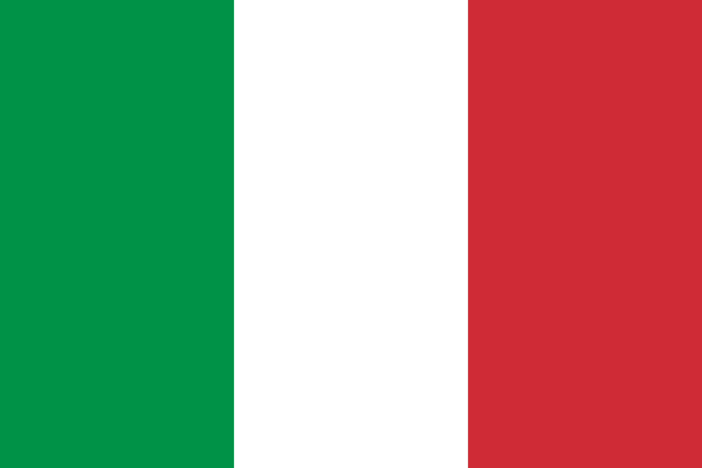

| Ранг | Ім'я | Бал | Вік |
|---|---|---|---|
| 1 |  Карлос Алькараз Карлос Алькараз |
6,740 | 19 |
| 2 |  Каспер Рууд Каспер Рууд |
5,850 | 23 |
| 3 | Рафаель Надаль |
5,810 | 36 |
| 4 | Данило Медведев | 5,065 | 26 |
| 5 |  Александр Звєрев Александр Звєрев |
5,040 | 25 |
| 6 | Стефанос Ціціпас | 4,810 | 24 |
| 7 | Новак Джокович | 3,570 | 35 |
| 8 | Кемерон Норрі | 3,550 | 27 |
| 9 | Андрій Рубльов | 3,390 | 24 |
| 10 | Янік Сіннер | 3,200 | 21 |
Світовий рейтинг 2022
| Рік | Турнір | Суперник |
|---|---|---|
| 2005 | Rolang Garros |  Маріано Пуерта Маріано Пуерта |
| 2006 | Rolang Garros | Роджер Федерер |
| 2007 | Rolang Garros | Роджер Федерер |
| 2008 | Rolang Garros | Роджер Федерер |
| 2008 | Wibledon | Роджер Федерер |
| 2009 | Australian Open | Маріано Пуерта |
| 2010 | Rolang Garros | Робін Содерлінг |
| 2010 | US Open | Новак Джокович |
| 2011 | Rolang Garros | Роджер Федерер |
| 2012 | Roland Garros | Новак Джокович |
| 2013 | Roland Garros | Давід Феррер |
| 2013 | US Open | Новак Джокович |
| 2014 | Roland Garros | Новак Джокович |
| 2017 | Rolang Garros | Станіслас Вавринка |
| 2017 | US Open | Кевін Андерсон |
| 2018 | Rolang Garros | Домінік Тім |
| 2019 | Rolang Garros | Домінік Тім |
| 2020 | Roland Garros | Новак Джокович |
| 2022 | Roland Garros | Каспер Рууд |
Перемоги на фіналах турнірів Великого шолома